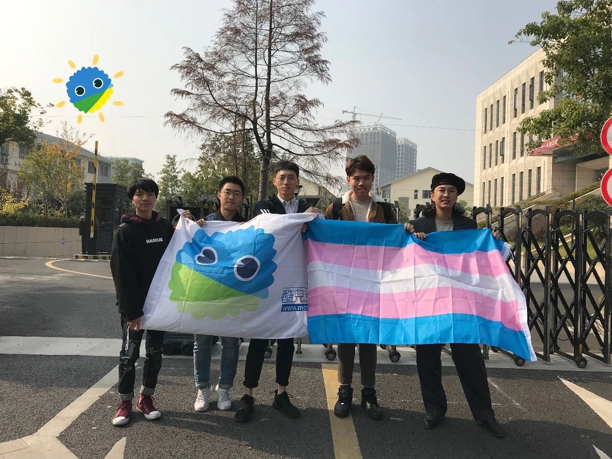
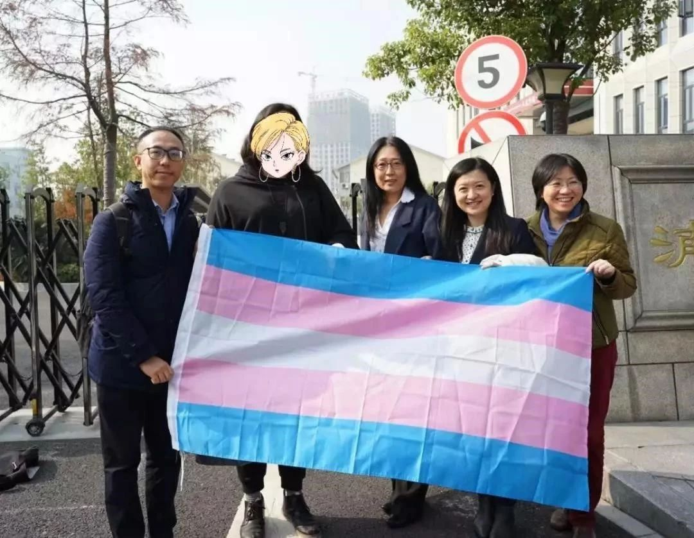

社群声援 | 跨性别平等就业权第一案开庭
跨性别平等就业权第一案开庭，论坛小伙伴带来亲历分享！
12 月 3 日，全国跨性别平等就业权力第一案在浙江杭州浦沿人民法庭开庭审理，原告马女士与被告公司代理人均到庭。我们的小伙伴们也亲历了这场就在身边的庭审，下面是大家熟悉的小伙伴 Desmond 从现场带来的私密体会和第一手信息。
01 伙伴亲历分享
初冬的杭州，天空因为雾霾看上去灰蒙蒙的。酷儿论坛的伙伴兵分数路，从城市的各个角落来到滨江，旁听马女士的庭审。赶往滨江的途中，我充满了前所未有的能量。
我相信这一天是可以被写进历史的，我也将和我的小伙伴们一同见证历史。
距离开庭还有 15 分钟，法院的走廊和门厅已经站满了来旁听庭审的朋友，其中还有好几张熟悉面孔。我非常感动，在工作日的早晨，也有许多小伙伴可以牺牲个人时间到场声援。
法庭的旁听席不大，许多小伙伴甚至需要站立或者坐在地上旁听。
“要不要拖几张凳子进来。”审判长带着一句友善的问候进入了审判庭。
显然，法院的工作人员没有预料到会有这么多朋友能到场。
伴随着老朋友和新朋友的寒暄，庭审在拥挤狭小的审判庭中开始了。

[参加庭审的瓜瓜们，图片来源：瓜瓜]
02 伙伴讨论
消费者偏好不能作为歧视的理由，但大多数时候都会以此作为借口。打破性别刻板印象，促成平等就业，任重道远。 ——大力
听完庭审之感慨良久，当中情分交杂，道理如麻。敬马女士有直面自己和社会的勇气，感跨性别者有来自社会大众上的广泛支持，叹该公司有接受容纳性少数人群的态度和行为，更惜大多数人，包括我们自己，并不了解，也无法察觉到，平等就业权中可能存在的歧视。道阻且长，责任重大，不仅要为伟光正的平权大事发声作为，更要察觉到隐藏在社会深处、人们心中，若有似无的那一丝丝不平等的眼光。 ——番茄
性平无小事，留给我们去做的还有很多。 ——Desmond
在听到被告公司分管负责人脱口而出“你们口中所谓的跨性别”、“我们对什么BLGT人群其实很包容”之前，我险些被被告代理人精彩的伤痛表演所欺骗。 ——小林
02 庭审流程
（以下内容为论坛志愿者现场记录并整理，可能存在一定缺失与疏漏）
开庭前
庭审原定于九点整正式开庭；
但由于人民陪审员没能及时赶到，庭审非常酷儿地延迟了半小时；
在等待期间，法官与庭审双方初步核查证据。

[图片来源：瓜瓜]
审理中
1. 法官核对原告被告身份；
2. 原告提出诉讼请求：赔偿、道歉、与相应诉讼费；
3. 被告针对原告诉讼请求提出答辩意见；
4. 被告提供《员工手册》与公司其他员工考勤记录以证明原告工作态度恶劣，而原告的代理律师认为，公司的《员工手册》适用于公司所有工种，所有员工实行标准工时，公司在事实上并没有针对“迟到”对所有员工进行相应处罚；
5. 被告提供仲裁调解书，认为本案已经接受劳动仲裁，继续庭审是对法律资源的浪费，而原告代理律师认为仲裁调解书是针对劳动权的调解，本案在于保障原告人的平等就业权与人格尊严权；
6. 原告提供录音材料，但未被准许当庭播放，内容是：被告公司 HR 劝解原告主动离职，并在劝解过程中说出“那你是跟男艺人还是女艺人”；
7. 专家证人入场，向法庭解释“歧视”的内涵，并接受问询；

[原告马女士与律师及专家证人团队，图片来源：同语]
歧视是一种不合理的差别对待，不能基于与工作无关的因素对员工进行差别对待。平等就业权不局限于招录，而是贯穿整个工作环节，在任何环节发生的不合理差别对待都构成歧视。 用人单位有辞退员工的权力，但这并不意味着用人单位可以滥用这种权力。 用人单位有义务同有歧视观念的客户进行沟通，打消 ta 们的顾虑。 ——专家证人 |
8. 双方对于争辩核心产生分歧，被告认为争论核心为：原告是否存在任何违反劳动合同的行为，而原告认为争论核心为：被告是否以“迟到等行为违反劳动合同”这个看似合法的借口来掩盖其真实的歧视行为；
9. 辩论结束，双方做最后陈述。
10. 法庭宣布休庭，没有当庭宣判。
庭审结束，法院并没有当庭宣判。随后不久，这条新闻出现在了各大自媒体和微博热搜。和我们想象的一样，各种各样的声音在舆论场上爆发了。
听见这些不同的声音，我们知道需要努力去做的事情还有很多。
性平无小事，同样任重而道远。
延伸阅读：